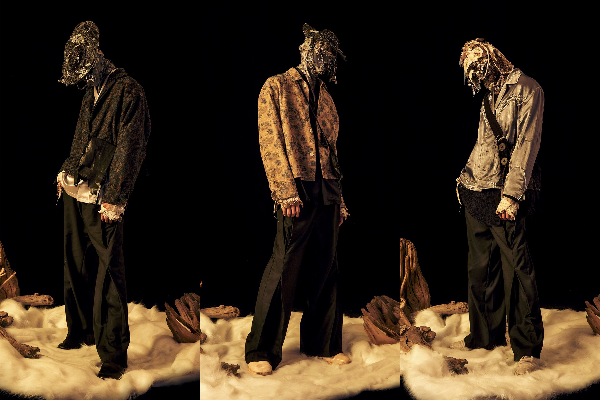
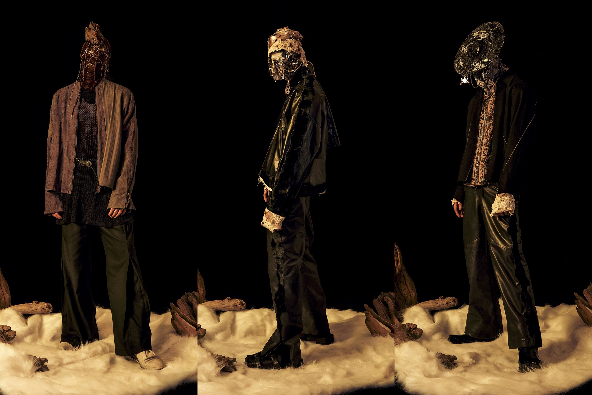

About Professor.E
Professor.E is a fashion brand from Taiwan. With its manual techniques, the outline of avant-garde fashion and strong image atmosphere with the release of the image FW17, it has attracted strong attention and discussion in the streets and foreingn communities successfully. Perhaps a few friends gradually know this brand through domestic and foreign media reports, icon works and other channels.
Significance of brand name and core concept of brand
Professor. E is a professor who tries to explore the truth. He is also a crazy scientist. He is lonely and eccentric. He hates cowards who bully others. He loves mankind and hates mankind at the same time. He has his own laboratory called relab, which comes from the reorganization of the word "rebel resistance". He loves music and art and considers himself an ideological aristocrat.
Why masked
In this era when all kinds of icons are filled in front of the screen, what we want to convey is a way to question and think about the essence and take action. Thinking constitutes the motivation of behavior. Under this core appeal, what matters is not who I am, but what I have done to make you think and make choices. I happen to think that action itself is the proof of spiritual existence. Therefore, anyone can become Professor e, and Professor e can also be anyone.
